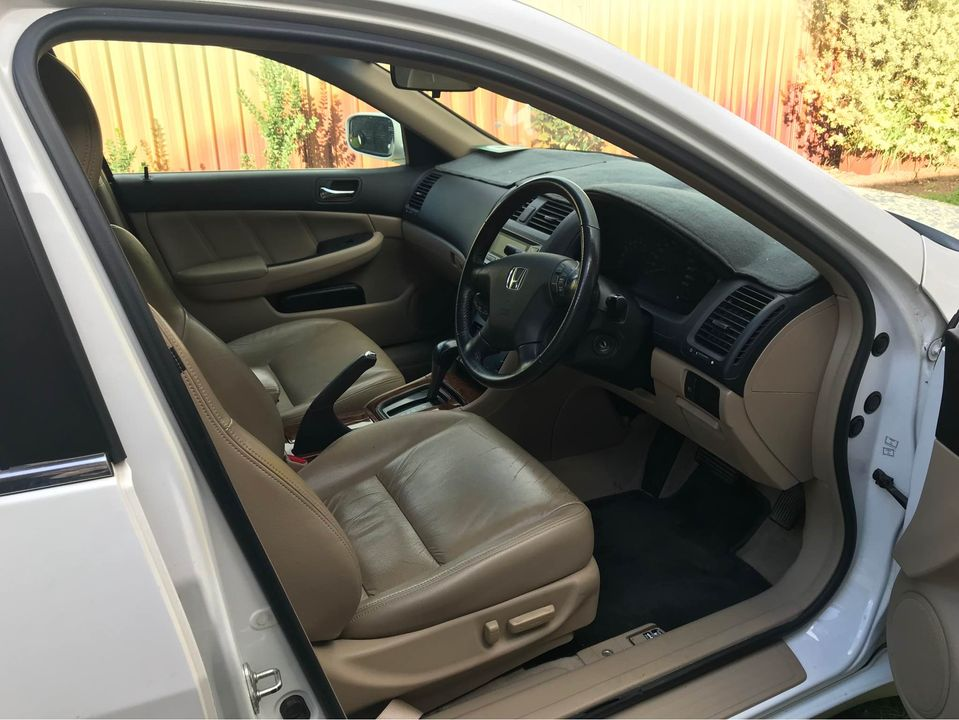

At Honda Wreckers Perth, we buy all makes and models. Call us now to get an unbeatable quote! Honda Wreckers Perth pays top cash for cars whether DEAD OR ALIVE. We pay top Cash for any Car, Van, Ute, 4WD and trucks. We are Vehicle buyers and have a wide range of car transporter to pick up all sort of vehicle.
If you have an old or unwanted Honda vehicle, chances are that it is currently hidden under junk and clutter in your garage or shed. You might even be finding it difficult to move. You've seen it and maybe even needed it, but now it's on the verge of being scrapped for scrap metal.
If you are thinking about selling your vehicle, we will be the first to tell you: you'll definitely have more chance selling it as a cash offer rather than on Trade Me or Gumtree!
Only few Insurance companies offer car Insurance in Perth and sometimes it's not enough. This is why we buy all cars for cash for our customers who want Cash For car Insurance. Cash For Insurance – Most secure option for a car insurance, used car owners, businessman and sellers! Cars for Sale At Honda Wreckers Perth Our Honda Wreckers Perth have lots of cars for sale, all kinds. If you are looking for reliable cars for sale at cheap prices, please contact us now! We will provide you with new cars that you can sell for cash at our car auction facility. At Honda Wreckers Perth we buy used, reconditioned, crashed or auctioned cars that are reliable, easy to maintain
We have a range of cars for sale. All types of make and models is available for sale. Our salesmen are licensed and insured for all types of vehicles. We are sure you are looking for the best deals in the market so we offer to cash the vehicle when it is used condition. Car No: Include your Vehicle No when calling. Can I sell my vehicle to Honda Wreckers Perth? Sure! Many people contact us to sell their cars to us. You can sell your car to Honda Wreckers Perth and we are ready to buy! We are vehicle buyers and have a wide range of car transporter to pick up all sort of vehicle. Does selling a car to Honda Wreckers Perth affect my car registration? You can sell your car to us without affecting your car registration. Can I sell my car to Honda Wreckers Perth to fund my current Car?

Every vehicle on our list of cars for sale are bought from customers looking to get rid of their unwanted vehicle. If your vehicle is in excellent condition, then we will be happy to buy it from you for the right price.
Be aware of a trade-in value for each Honda vehicle. Honda - 1999 to 2015 model years. In New South Wales, the vehicle values are set according to the Insurance Institute for Highway Safety (IIHS) rating scale.
Honda Wreckers Perth are the best value for money wrecker services in Perth. They are reliable, great value and help you with your problems in most reliable and flexible way. Call us now to get a no hassle quote!
Address:103 Sheffield Rd, Welshpool WA 6106
Phone: (08) 9358 1392